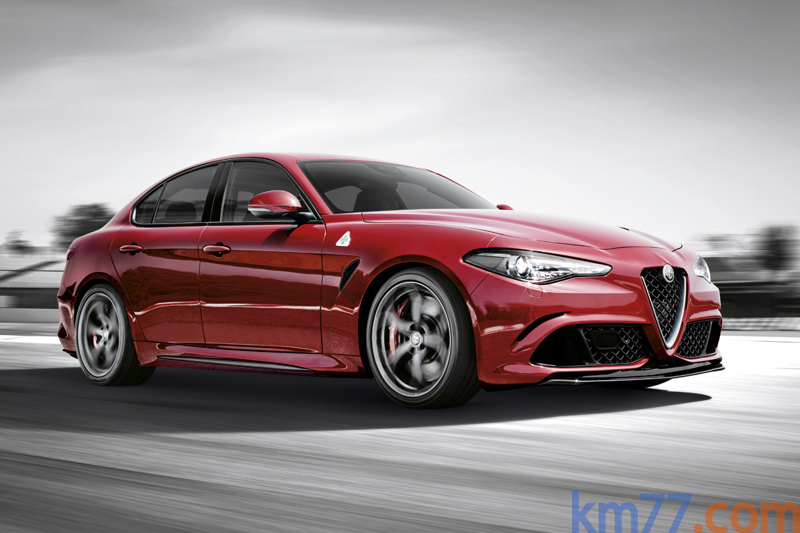
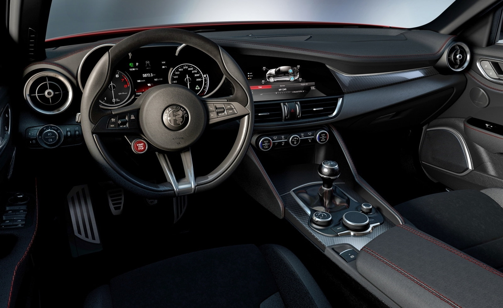

El Alfa Romeo Giulia es un turismo de cuatro puertas del que, por el momento, sólo tenemos información de la versión más potente, denominada Quadrifoglio. Ésta tiene un motor de gasolina V6 turbo de 510 CV y la posibilidad de montar un cambio manual o automático y un sistema de tracción a las ruedas traseras o a las cuatro. Podrá adquirirse a partir del último trimestre de 2015 por 87 000 euros. A lo largo de 2016 llegarán otras versiones, tanto Diesel como de gasolina.
Aunque Alfa Romeo no ha publicado las dimensiones de la carrocería, el Giulia Quadrifoglio parece una alternativa al BMW M3 (431 CV) y el Mercedes-AMG C 63 S (510 CV). Es 500 euros más caro que el BMW y 14 600 euros más barato que el Mercedes-AMG.Justo después de la finalización del salón del automóvil de Fráncfort (el 27 de septiembre), Alfa Romeo pondrá a la venta una edición limitada del Giulia Quadrifoglio a un precio de 103 000 euros. Ésta se caracteriza por tener muchos de los elementos opcionales, como unos discos de freno cerámicos y unos asientos Sparco fabricados en fibra de carbono. Sólo podrá pedirse a través de una web específicamente habilitada para ello.
El Giulia Quadrifoglio puede acelerar de 0 a 100 km/h en 3,9 segundos, aunque Alfa Romeo no especifica con qué caja de cambios ni sistema de tracción. El M3 (tracción trasera) necesita 4,1 segundos, mientras que el C 63 S (tracción trasera) requiere 4,0. La velocidad máxima del BMW y del Mercedes-AMG está limitada a 250 km/h, mientras que la del Alfa Romeo no, lo que le permite alcanzar 307 km/h.
Alfa Romeo Giulia. Imágen exteriores.

El motor del Giulia Quadrifoglio «está elaborado por técnicos procedentes de Ferrari». Para su construcción se utiliza aluminio y tiene un sistema de desconexión automática de cilindros. Su cilindrada es 2,9 litros.En el Giulia hay piezas realizadas con materiales ligeros. Por ejemplo, el aluminio se emplea, además de en el motor, en la suspensión —que es independiente en ambos ejes y de tipo paralelogramo deformable—, en las puertas y en las aletas. Por otra parte, el eje de transmisión está hecho de fibra de carbono, así como el capó y el techo. Los discos de frenos pueden ser de acero y, en opción, de un material carbocerámico.
El labio inferior del parachoques delantero se despliega para mejorar la adherencia en curvas. Su movimiento está controlado por una centralita electrónica (denominada CDC, de Chasis Domain Control). Los colores disponibles para la carrocería son cinco y se llaman: Rojo Competizione, Blanco Trofeo, Negro Vulcano, Gris Vesuvio y Azul Montecarlo.
La masa en vacío del Giulia Quadrifoglio (es decir, sin conductor, sin carburante y sin otros líquidos necesarios para el correcto funcionamiento del vehículo) es 1524 kilogramos y está distribuida al 50 % entre los dos ejes. Un BMW M3 es más ligero ya que su masa en orden de marcha (incluye un conductor de 75 kg, un 90 % del depósito de carburante y otros líquidos indispensables) es 1595 kilogramos.
Alfa Romeo Giulia 2016. Imágen del interior

En la consola hay un mando denominado DNA (que también está disponible en otros Alfa Romeo), que permite variar la respuesta del motor en función de cuatro programas: Dynamic, Natural, Advanced Efficient y Racing. El diferencial trasero tiene función Torque Vectoring, mediante la que es posible variar el reparto de fuerza de forma independiente entre las dos ruedas del eje.Por el momento, sólo hay una imagen del interior, en la que se muestra una pantalla de 8,8 pulgadas, a través de la cual se visualizan las funciones del sistema multimedia «Connect 3D Nav». Este sistema incluye navegador y la posibilidad de uso de aplicaciones descargadas de internet.